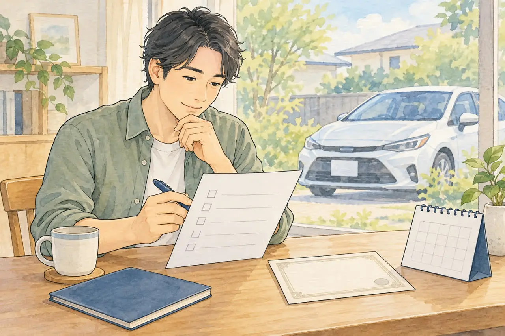
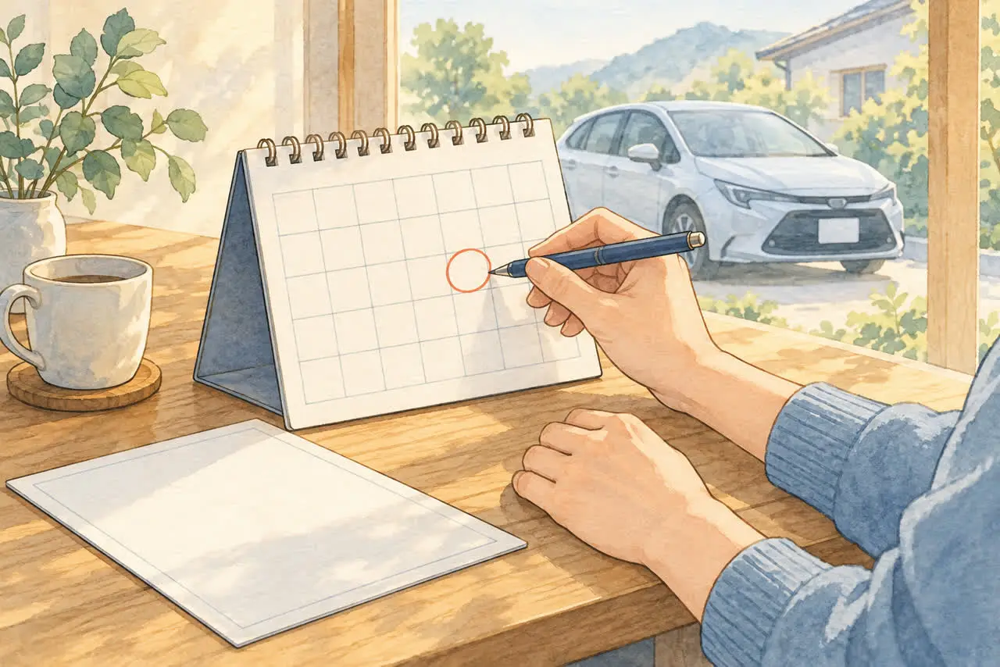
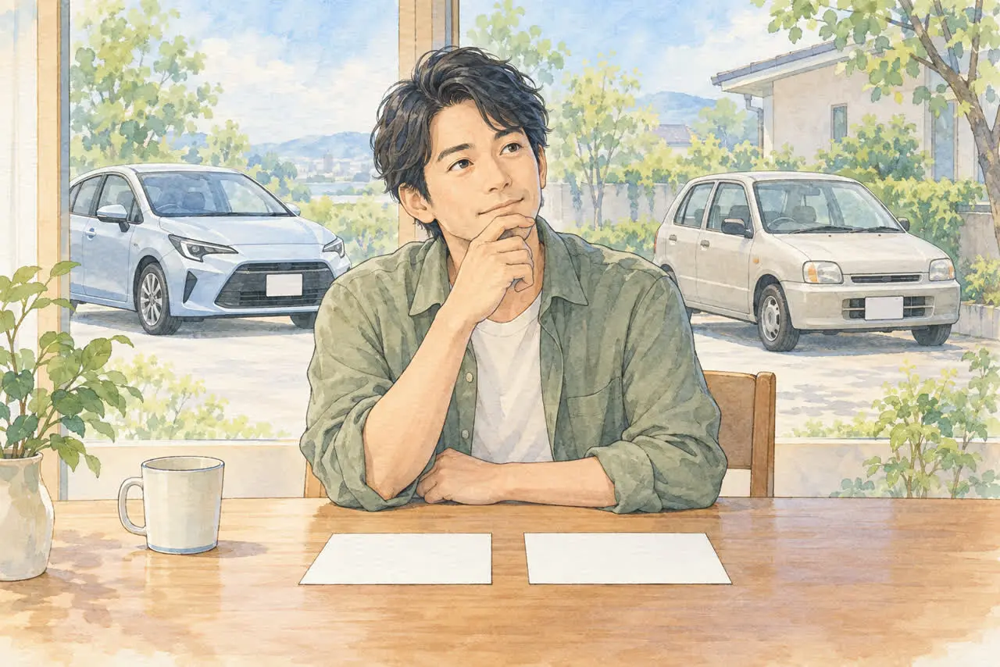

廃車のときの任意保険が気になる方へ
任意保険の中断証明、廃車のときに忘れずに
等級を守るための手続きと期限
公開
こんにちは、東京都足立区江北で自動車解体・廃車買取をしている「大崎商店 環七店」です。
「廃車にしたら、任意保険はどうなるの？」
「しばらく車に乗らないけれど、等級（割引）は消えてしまう？」
「中断証明書って、何？」
任意保険は、廃車にしても自動では解約されません。 そして、解約すると、これまでの等級（割引）がなくなってしまうことがあります。しばらくしてまた車に乗るかもしれない方には、「中断証明書」で、等級を守る方法があります。
この記事では、中断証明書の仕組みと、取るときの条件・期限・必要書類を、やさしくご紹介します。後半では、足立区の大崎商店の場合もご紹介します。
※条件や期限は、保険会社によって異なります。 この記事の数字は、一部の保険会社の例です。解約の前に、契約中の保険会社に確認してください。
① 中断証明書とは

任意保険には、無事故の年数などに応じて「等級」があり、等級が高いほど、保険料の割引が大きくなります。
解約しただけで、直ちに等級が消えるわけではありません。 ただし、通常の引継ぎができる期間を過ぎると、これまでの割引等級を引き継げなくなることがあります。しばらく乗らない場合は、「中断証明書」の発行を申し込んでおくと、一定の条件で、あとから新しい契約に等級を引き継げます（日本損害保険協会・くるまの保険Q&A）。
- 廃車、譲渡、車検切れなどで、しばらく車に乗らないときに使います
- 中断証明書は、再び車に乗るときに、新しい契約で提出します
証明書は自動発行されません。 保険会社または取扱代理店へ、ご自身から申し出ましょう。中断中の車に補償を付ける書類でもないため、乗らない車の保管中の補償が必要かも相談してください。
② 発行してもらえる条件（例）

条件は保険会社ごとに違います。例として、アクサ損害保険では次のとおりです（アクサ損害保険）。
- 等級：新しい契約で、7〜20等級になる場合
- 車の状態（いずれか）：廃車・譲渡・リース返還が中断日までに完了している／中断日の翌日に車検切れとなっている／中断日までに盗難にあい未発見／中断日までに別の保険契約への車両入替が済んでいる
注意したいこと
- 現在の等級だけでなく、新しい契約に適用される等級で判定します。 事故による等級ダウンを反映して6等級以下になる場合は、発行対象外となることがあります
- 解約する日（中断日）までに、廃車や譲渡が済んでいることが条件の保険会社があります。解約する日を、先走って決めないようにしましょう
- 事故による等級ダウンや事故有係数適用期間も、再契約に反映されます。 中断すれば事故の影響がなくなるわけではありません。再契約時に適用される等級・割引率を保険会社に確認しましょう
③ いつまでに申し込む？

- 申請期限：中断日（解約日・満期日）の翌日から5年以内としている保険会社があります（アクサ損害保険の国内特則の例）。日本損害保険協会のQ&Aでは、「中断から13か月以内、または5年以内など」と案内されています。保険会社ごとに異なるため、契約中の保険会社で確認しましょう
- 解約したあとでも、発行できる保険会社があります。たとえば、東京海上日動は、中断日から5年以内であれば発行できます（東京海上日動FAQ）。ただし、後回しにしないのが安心です
- 有効期間：中断日の翌日から10年という保険会社があります（アクサ損害保険）。有効期間のうちに、再契約しないと、等級を引き継げません
「発行を申し込める期限」と「証明書を使って再契約できる期間」は別です。 例えば、SOMPOダイレクト「おとなの自動車保険」は、発行依頼が解約日・満期日から13か月以内、有効期間が中断日の翌日から10年間です。10年以内ならいつでも発行を頼める、という意味ではありません（SOMPOダイレクト・中断証明書の発行条件と発行方法）。
再契約には、車を取得してからの期限、車の用途・車種、主に運転する人（記名被保険者）や所有者の条件もあります。例えば、アクサの国内特則には、新しく取得した車について取得後1年以内に新しい契約を結ぶ条件があります。証明書の有効期間だけで判断せず、車を買う前・再び乗る前に、加入予定の保険会社へ確認してください。
④ 必要な書類
- 中断証明書の発行申請書：保険会社から取り寄せる、または、ホームページなどから申し込みます
- 廃車・譲渡を確認できる書類のコピー（保険会社によって異なります）
- - 廃車の場合：登録事項等証明書、登録識別情報等通知書など
- - 売却・譲渡の場合：名義変更後の車検証のコピーなど。電子車検証の場合は、所有者情報を確認できる自動車検査証記録事項を用意します。保険会社によっては、変更前後の両方のコピーが必要です（損保ジャパンの案内・SBI損保の案内）
- - 車検切れの場合：自動車検査証、登録事項等証明書など
- - 盗難の場合：盗難届出証明書など
軽自動車は、自動車検査証返納証明書・検査記録事項等証明書など、普通車とは異なる書類が案内されます。保険証券や証券番号が必要な場合もあるため、契約先に確認してください。
必要な書類の控えは、保険の手続きが終わるまで保管しましょう。 売却や廃車申請に原本を渡す場合は、保険会社が認める控えを事前に確保してください。引き渡し日と抹消登録日は同じとは限りません。 中断理由を廃車・譲渡・車検切れのどれにするか、その日付を何で確認するかは、解約前に保険会社と相談しましょう。廃車のあとの書類は、廃車したあとに届く書類・残す書類は？保管しておきたいものと、使い道の記事をご覧ください。
⑤ 中断証明書が向いている人・向かない人

| 状況 | 向いている手続き |
|---|---|
| すぐに別の車に乗り換える | 車両入替（今の契約を、新しい車に引き継ぎます） |
| しばらく車に乗らないが、また乗るかもしれない（数か月〜数年） | 解約と、中断証明書の発行 |
| ご自身はもう車には乗らない | 解約を相談。配偶者・同居親族が等級を使える場合もあるため、中断証明書が必要か確認 |
| 等級が低い、事故が多い | 保険会社に、発行の条件を確認 |
迷うときは、車を手放す前に、保険会社へ連絡して、状況を伝えましょう。
⑥ 廃車のときの、保険の手続きの流れ
1. 保険会社に連絡する：廃車する予定、車を引き渡す日を伝え、中断証明書を取るか相談します
2. 解約日（中断日）を決める：廃車や譲渡が済んだあとの日にするかなど、保険会社に確認します。自走して持ち込む場合は、運転中の補償が途切れないようにします
3. 発行の申請をする：申請書と、必要書類を提出します
4. 中断証明書を保管する：再び車に乗るまで、なくさないように保管します
5. 再契約の前に相談し、提出する：有効期間と、車の取得からの期限・記名被保険者などの条件を確認して、新しい契約で使用します
自賠責保険の解約や返戻金は、別の手続きです。くわしくは、廃車にするとお金は戻ってくる？還付金のことと、事故を起こしたときの保険の使い方の記事をご覧ください。
よくある質問
Q. 廃車にしたら、任意保険は自動で解約されますか？
A. 自動では解約されません。保険会社に連絡して、手続きが必要です。
Q. 解約してしまいました。中断証明書は、もう取れませんか？
A. 保険会社によっては、解約後でも発行できます（例：中断日から5年以内）。ただし、会社によって異なるため、早めに確認してください。
Q. 中断証明書があれば、必ず同じ等級で再開できますか？
A. 必ずではありません。有効期間に加え、車の取得時期・用途車種・記名被保険者や所有者などの条件があります。事故による等級ダウンや事故有係数適用期間も反映されるため、再契約先に確認してください。
Q. 等級が6等級以下です。中断証明書は取れますか？
A. 現在の等級だけでは判断できません。例えばアクサは、次の契約に引き継ぐ際に7〜20等級となることが条件です。無事故・事故の状況を反映した判定になるため、契約先に確認してください。
Q. すぐに別の車に乗り換えます。中断証明書は必要ですか？
A. 乗り換えるなら、一般的には「車両入替」の手続きです。中断証明書ではなく、車両入替ができるか、保険会社に確認してください。
大崎商店の場合：任意保険のこと
ここからは、足立区の大崎商店の場合をご紹介します。
大崎商店では、車の引き取り・買取にともなって、廃車の手続きをしています。
- 任意保険の手続き：保険会社が窓口です。お引き渡しの日を、保険会社にお伝えください。中断証明書を取るかどうかも、保険会社へご相談ください
- 譲渡を確認する書類が必要な方：名義変更をした車は、名義変更済みの書類のコピーをお渡しできます。ご依頼時にお申し出ください。電子車検証の場合は自動車検査証記録事項など、保険会社が必要とする書類を事前に確認してください。お渡しは名義変更の完了後になります
- 抹消の書類が必要な方：保険会社など、相手方に必要な場合は、抹消の証明（コピー、または原本）をお渡し・お送りできます。ご依頼時にお申し出ください。ただし、抹消の手続きの完了後になります。一時抹消も永久抹消も、すぐにできるとは限らず、保険会社などの指定する期限までに、間に合う保証はありません。期限がある場合は、ご依頼時にお伝えください
- 自走でお持ち込みの場合：運転中の補償が途切れないよう、お引き渡しの日を決めてから、保険会社へご連絡ください
- 自賠責保険：返戻金を買取価格に含め、解約などの手続きを当店にお任せいただく形が、ほとんどです。含めた分は当店が受け取り、お客様に同額が別途支払われるわけではありません。必要な委任・記入等はご案内します。任意保険の中断証明書とは別の扱いです
大崎商店では、
- 解体費用・手続き代行費用・印紙代は別請求しません
- 足立区内は、引き取り無料
- 足立区外も、買取価格がつかない車は、環七店から片道約30分圏内は引き取り無料
- 買取価格がつく車は、圏外でも、所在地と車の状態によっては無料で引き取り（事前にご案内します）
- 車のお持ち込みは、どこからでも歓迎（基本は環七店。日時は、事前にお電話でご相談ください）
${SHOPS_TITLE}
電話で相談する 03-3854-4141メールで相談する（フォーム）ご来店の前に、お電話ください。引き取りなどで外出していることもあり、お電話いただければ、受け入れの可否や、ご案内できる日時をお伝えできます。
大崎商店 環七店
電話：03-3854-4141
〒123-0872
東京都足立区江北7丁目1−3
営業時間：月〜土 10:00〜18:00
休業日：日曜・祝日
環七沿い／舎人ライナー
西新井大師西駅
大崎商店 入谷店
電話：03-3899-2837
〒121-0836
東京都足立区入谷7丁目5−11
営業時間：月〜土 9:30〜17:30
休業日：日曜・祝日・第2土曜
引き取りやご相談のお電話は、環七店がスムーズです。車検証（または自動車検査証記録事項）をお手元にご用意いただくと、ご案内がスムーズです。
※掲載のイラストはAIで作成したイメージです。実際の店舗・役所の窓口を撮影したものではありません。
参考：日本損害保険協会・くるまの保険Q&A／アクサ損害保険・中断証明書／東京海上日動・中断証明書は解約後でも発行できますか／三井住友海上・どのような場合に中断証明書を発行してもらえますか／SOMPOダイレクト・中断証明書の発行条件と発行方法